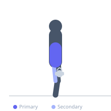
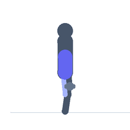

Exercise guide / Jefferson Curl
Jefferson Curl
The Jefferson curl is a slow, controlled weighted spinal flexion exercise in which the lifter intentionally rounds the spine segment by segment from the neck downward while holding a light load. It is used in strength sports and gymnastics for building spinal flexion strength and hamstring flexibility under load. This exercise is controversial and is generally restricted to experienced trainees with no history of spinal disc pathology.
Primary muscles
erector spinae
Secondary muscles
biceps femoris long head
semitendinosus
semimembranosus
Stabilizers
transverse abdominis
Equipment
Dumbbell (Fixed)
Optional
Kettlebell


Starting position
- Stand on a box or elevated surface with feet together and knees soft but mostly straight. Hold a very light dumbbell or kettlebell in both hands in front of the thighs.
Setup
- Use a very light load — 5–15 kg is typically sufficient. Stand on a box so the hands can travel below foot level. Knees remain soft throughout.
Steps
- Step 1: Begin standing with the weight held in front. Take a breath.
- Step 2: Tuck the chin to chest and begin to curl the spine downward, one vertebra at a time — start at the neck, then upper thoracic, mid thoracic, lumbar.
- Step 3: Continue curling until the hands are as far toward the floor as possible, allowing a full spinal flexion stretch.
- Step 4: Pause at the bottom, breathing naturally.
- Step 5: Reverse the movement in the opposite order — start by uncurling the lumbar, then thoracic, then cervical, returning to standing upright.
Coaching cues
- Melt from the top down — start from the neck, not the lower back
- Think of your spine as a string of pearls uncurling one at a time
- The weight is a guide, not resistance — it should be almost nothing
Breathing
- Breathe naturally throughout. Do not hold the breath during flexion.
Range of motion
- The goal is maximum spinal flexion through the full range, with the hands reaching as far below the feet as possible. Build this range gradually over months.
Tempo
- Very slow — 5–10 seconds to descend, 10–30 second hold at the bottom, 5–10 seconds to ascend.
Common mistakes
- Using too much weight — this is a flexibility exercise, not a strength exercise
- Performing with straight knees and tight hamstrings before adequate flexibility has been developed
- Rushing through the movement rather than moving slowly segment by segment
Safety
- This exercise is contraindicated for anyone with herniated discs, spinal stenosis, spondylolisthesis, or any condition aggravated by spinal flexion
- Only suitable for advanced trainees with a thorough understanding of spinal mechanics
- Start without weight until movement quality is high, then add minimal load
- Stop immediately if any sharp or radiating pain occurs
Training
- mobility: 3–5 reps
- mobility: 2–3 sets
- Rest: {'mobility': 60}